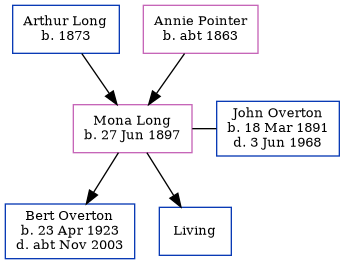

Mona Winifred Catherine Overton (née Long) 1897 -
[ Home ] | [ Calendar ] | [ Surnames Index ] | [ Errors ] | [ Family History ]The child of Arthur Long (a golf caddy) and Annie Pointer (a laundress), Mona Long, the second cousin twice-removed on the father's side of Nigel Horne, was born in Ash, Kent, England on 27 Jun 18971,2,3, was baptised there on 12 Sept 1897 and married John Overton (a metropolitan police constable with whom she had 2 children: Bert Alexander and Ivan Kenneth, along with 1 surviving child) in Camberwell, London, England around May 19204.
During her life, she was living at Spinners Cottage, Worth, Kent, England on 31 Mar 19011; at 41 Deft Street, Sandwich, Kent on 2 Apr 19115; and at 83 Wickham Street, Bexley, Kent on 29 Sept 19392.
Parents
- Arthur Watts was born in 1873
- Annie Elizabeth was born c. 1863
Children
- Bert Alexander was born on 23 Apr 1923
Citations
- 1901 England, Wales & Scotland Census - Findmypast (was age 3 and the daughter of the head of the household)
- 1939 Register - Findmypast (was the wife of the head of the household)
- England & Wales births 1837-2006 - Findmypast
- England & Wales Marriages 1837-2005 - Findmypast
- 1911 Census for England & Wales - Findmypast (was age 13 and the daughter of the head of the household)
Media
England & Wales births 1837-2006 - BMD/B/1897/3/AZ/000370/351
England Births & Baptisms 1538-1975 - R_883990368
England & Wales marriages 1837-2005 - BMD/M/1920/2/AZ/000945/084
1901 England, Wales & Scotland Census - GBC/1901/0006671483
1911 Census for England & Wales - GBC/1911/RG14/04550/0427/4
1939 Register - TNA/R39/1224/1224E/008/44
Family Tree
Map
Generated by ged2site. Last updated on Jul 3, 2024
Known Issues
Removing leading 0 from residence date '02 Apr 1911'
02 Apr 1911: Not living with either parent in childhood when aged 13